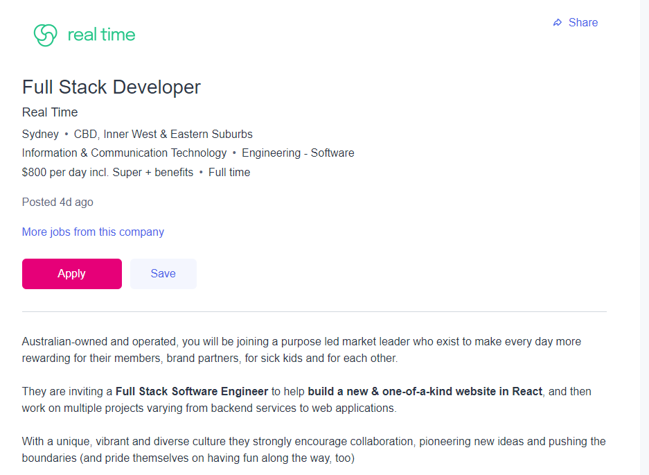

Ideal Job
My ideal job would be as a tech entrepreneur. This would mean developing my own apps, games, tools, or websites to sell to others. If I were to choose an ideal job where I was employed by somebody else, it would be as a full
stack software developer.

The position begins with the employee working on an unnamed project as a front-end React developer. After the project is complete, the employee transitions to an all-rounder full stack position. I find the job appealing because
while I’d be able to stay in my comfort zone of working with JavaScript, I’d have the variety of working on both the front-end and back-end of projects.
The main skills required are NodeJS and React. NodeJS is a backend tool while React is a front-end library. Both of these tools use JavaScript, so an excellent understanding of JavaScript is needed. While the description does not
specifically state how many years of NodeJS or React experience is needed, since the job is advertising $800 per day it’s likely they are looking for somebody to have advanced and demonstrated React and NodeJS skills. The position
also requires soft skills like teamwork, time management, and creativity. The position seems to be focused on collaboration with other developers, so good interpersonal and organisational skills are a must.
While I do have experience with NodeJS and React, my experience is very limited, and my skills are still developing. I have used these two tools, as well as JavaScript, as a hobbyist, so my NodeJS and React skills are not up to the
standard wanted for the job. I also have little experience in a corporate setting. While I have worked in groups at small businesses, I do not have any experience working for an IT company in the context of the position. I am able
to work in a team and my interpersonal skills are decent but having no corporate IT company experience is a considerable disadvantage.
The first step towards gaining the skills I need for this position is to complete my Bachelor of Information Technology. While I am studying, I will be developing my NodeJS and React skills. It would be helpful if I use NodeJS and
React in a course project so I can demonstrate my skills with them. Although the job ad does not say explicitly, I believe that they are looking for somebody with experience working as a full stack developer. This means that a good
step to take after university would be to take a graduate or junior full-stack developer job. I enjoy making my own projects, so I would bank up a portfolio of NodeJS and React projects for a portfolio while working. I am sure that
following this plan will give me everything I need for the position.
Personal Profile

INTP
My result for the Myers-Briggs Type Indicator (MBTI) test was INTP-T. The INTP personality type is known as the Logician and INTPs tend to be independent and analytical.

Kinaesthetic Learner
My test results show that I’m a kinaesthetic learner. Kinaesthetic learners prefer using practical and hands on lessons, trial and error as well as previous experience to learn.

Creative
On my Divergent Association Task, which is a creativity test, I scored 84.52 which is higher than 83.54% of participants.
I feel that the test results accurately show my strengths and weaknesses. The most relevant meaning I gathered from the tests is that while I can come up with well-thought-out and creative ideas, I struggle with expressing them and arguing for
them because of my introversion and self-doubt. The test results mean that I have positive traits, but I need to push myself for them to be useful.
I believe that the results will influence my behaviour in a team positively. I’m able to clearly see my strengths and weaknesses through the results. This means that I can be more aware of positive skills that I can bring to the group as well
as things that I need to be mindful of. I will be mindful that I sometimes do not speak up in group discussions, so I will push myself to do so. I will also make sure to use my analysis skills and creativity in the idea forming process.
I think that a large part of collaboration is understanding. If you don’t come to an understanding with your group, it will be very difficult to get anything done. A large takeaway from these results is just how different people are. While
forming a team, I should take into account that I need to be understanding of other people’s personality traits, strengths, and weaknesses as they should be with me.
Project Idea
Overview
‘Internet Idle’ will be a server based incremental idle game where the player has to build up their company to become the world’s largest Internet Service Provider (ISP). Players will use their in-game currency to buy upgrades, equipment and
to advertise their company in an endless and addictive gameplay loop. Internet Idle will be playable on mobile as well as browser and will be one of very few idle games that let you play on the same save file across platform.
Motivation
Idle games have been a large section of the casual gaming market since the early to mid-2010s and have continued to grow in popularity. An Idle game has no defined ending, and its gameplay loop is based around collecting enough in game
currency to incrementally progress through the game. An infinitely playable, addictive, and easy to access game has huge earning potential. One of the most popular idle games, ‘Idle Heroes’ was making more than $264,000 in daily revenue during
January of 2018
Description
The gameplay of Internet Idle will be simple and easy to understand, but extremely addictive. Idle games have a proven formula that when done well, produces a game that can keep players hooked. Even though Internet Idle aims to innovate in
many fields, the core mechanics and gameplay loop common in the idle game genre will be present. While the goal of the vast majority of idle games is for the player to earn higher and higher amounts of in-game currency, all idle games differ in
how the player earns that money.
In Internet Idle, the player will own an ISP and will be paid for each byte of data their company processes. The player will have to play an exciting balancing act between the amount of data they receive from customers and the amount that they
can process and send through their servers. Although idle games have no ending, they do have limitations. A player can only buy so many servers and make so much money before they get bored. This is where the rebirth mechanic comes in to play.
The vast majority of successful idle games have a rebirth game mechanic. This allows the player to wipe all of their progress to gain something in return. Often the increments in idle games are not linear but are exponential. The rebirth system
makes the exponential increments less harsh by giving the player a massive buff. Internet idle’s rebirth system will allow the player to reset their progress in exchange for a multiplier on all in-game currency earned. This encourages the
player to continue playing the game due to the sunk-cost fallacy and helps to flatten the exponential challenge in the game. If idle game is like rolling a boulder up a hill for an eternity, rebirth is a satisfying way to make the hill a bit
less steep.
Internet Idle will have the advantage of being one of the few Idle games that can be played on PC, Mac, IOS, and Android all while on the same save file. This means that a player can sign in easily through their Google or Facebook account via
OAuth and will never lose their progress. They can continue their game wherever they are. This feature will require the game to be hosted on servers, this of course means that the game will cost money to deploy and keep functional. That is why
it is necessary that the game is monetised.
Monetisation will come in two forms, in-game purchases and ads. Both ads and in-game purchases will be optional and will grant the player with rewards when seen or purchased. As an idle game progresses incrementally, players often can get stuck
at an increment or have to wait too much time to progress. In-app purchases and ads allow the player to progress quickly and provide instant gratification rather than the delayed gratification that normal gameplay provides. This instant
gratification system is what makes idle games such great earners. With a large enough player base, Internet Idle should be able to generate a large profit even with the expense of server costs.
Tools and Technologies
Internet Idle will be built using React and NodeJS. While using these tools will help Internet Idle to become a great portfolio piece, they also pose other significant advantages. Using React will allow Internet Idle to be accessible as a
website and as a mobile app via React Native using a single codebase. NodeJS is a great fit for React and for the JSON data format that the project will use. Internet Idle will be using MongoDB or a similar JSON compatible database and will use
a cloud hosting service like AWS or Azure to host the game servers.
Skills Required
The skills required for the project include database planning and management, JavaScript and JS libraries, HTML/CSS, and game design. The only hardware required for the project, other than the computers that the game will be programmed on, are
servers. This is not an issue as servers don’t have to be purchased outright. A cloud hosting service like Azure or AWS will be used. Within a university context, being able to find a team that holds the skills needed may be difficult but is
entirely possible. It is not necessary that all members of the team have to possess each of the skills required. The labour can be divided which means that if members do not already know a skill that is needed, learning the skill could be
possible within the time frame.
Outcome
Much like the gameplay of an idle game, the ideal outcome of the project is incremental. The first measure of success will be whether Internet Idle is playable and easily accessible. While having a playable game is an achievement in and of
itself, the greatest measure of success for Internet Idle will be whether the game is interesting enough to garner a player base. Player engagement can and will be monitored to measure the success of the game. Even if the game is not successful
in a commercial sense, its development will have a positive impact as it will serve as a strong portfolio piece.